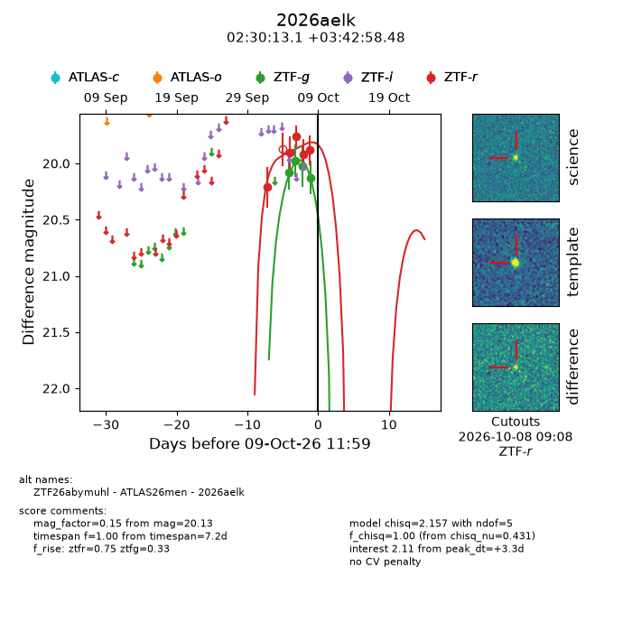
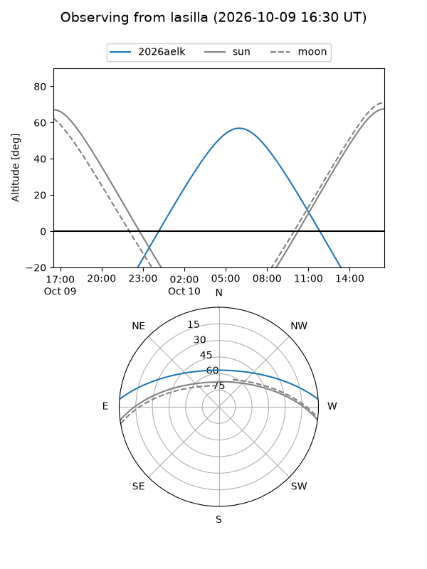
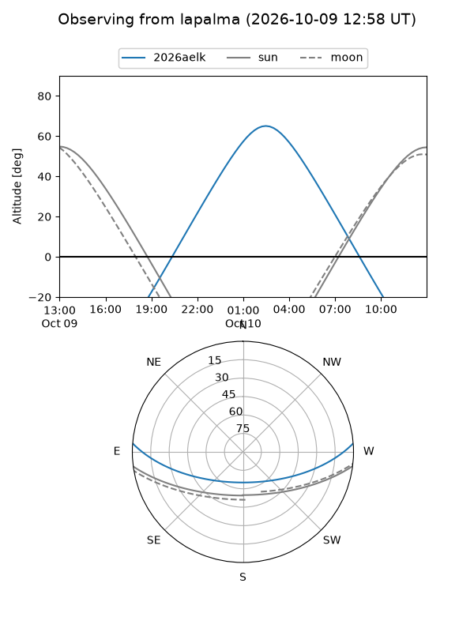
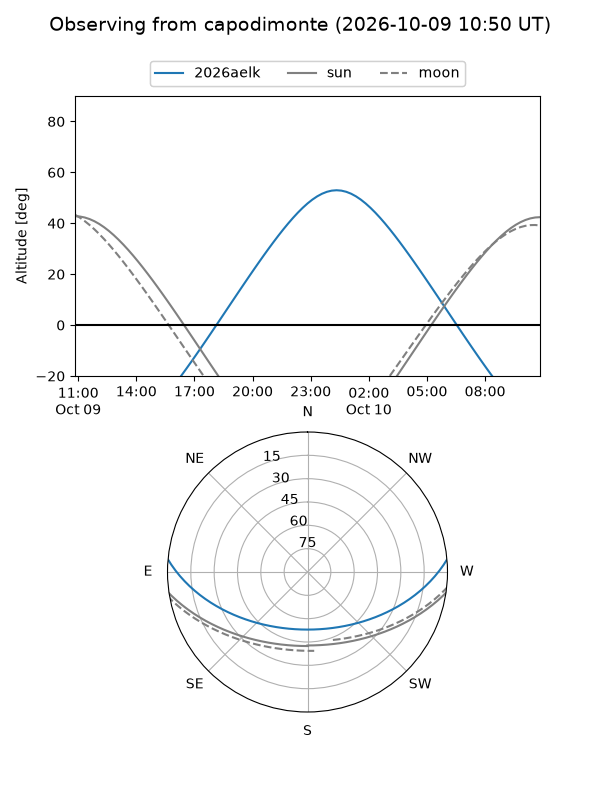
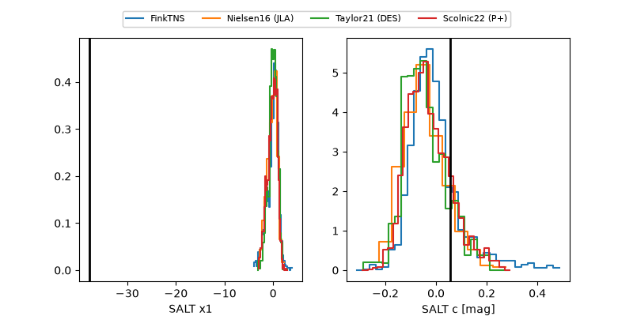

2026aelk
Target 2026aelk at 2026-10-09 12:01
Aliases and brokers:
FINK-ZTF: ztf.fink-portal.org/ZTF26abymuhl
Lasair-ZTF: lasair-ztf.lsst.ac.uk/objects/ZTF26abymuhl
ALeRCE-ZTF: alerce.online/object/ZTF26abymuhl
YSE-PZ: ziggy.ucolick.org/yse/transient_detail/2026aelk
TNS name: wis-tns.org/object/2026aelk
Direct TNS query: direct search
alt names
ZTF26abymuhl (ztf,fink_ztf)
2026aelk (tns,yse)
ATLAS26men (atlas)
Coordinates:
equatorial (ra, dec) = 37.5546,+3.71624
equatorial (HMS+DMS) = 02:30:13.11,+03:42:58.48
galactic (l, b) = (164.4403,-51.01749)
Flags:
peak dt: +3.3
Photometry:
last ztfg=20.13, ztfr=19.88
4 ztfg, 5 ztfr detections
Lightcurve

Visibility



Additional plots
